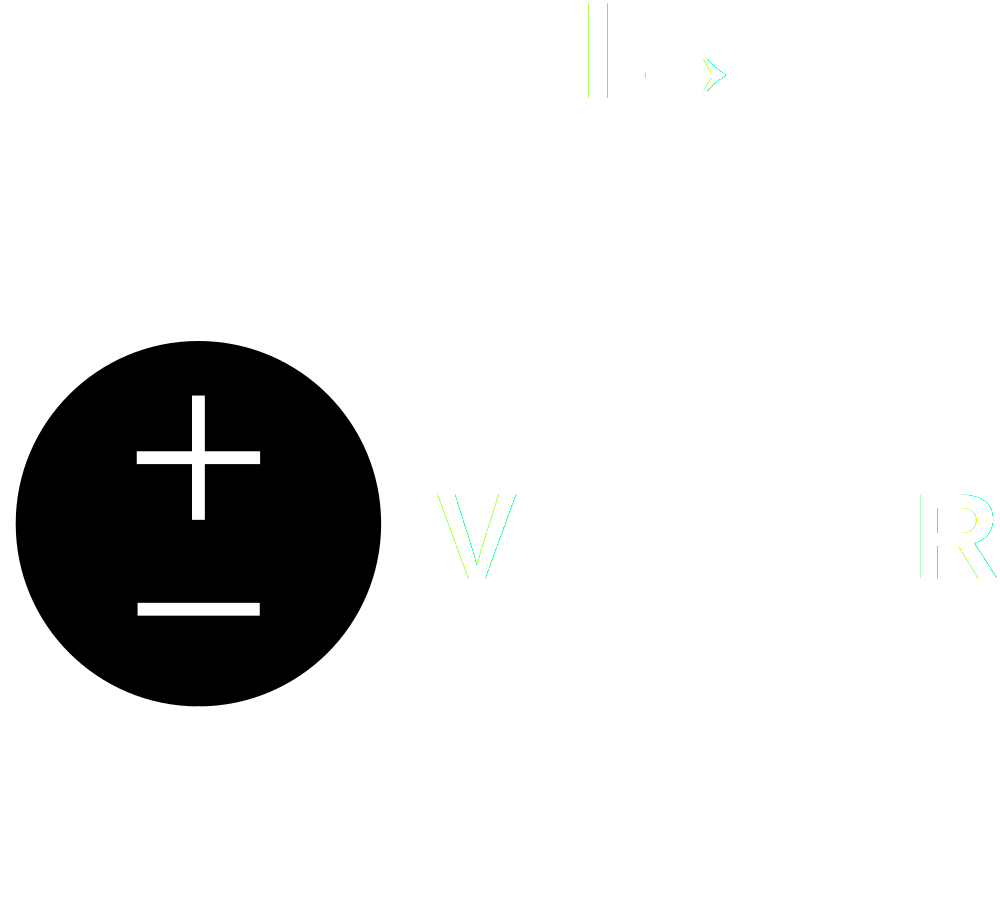
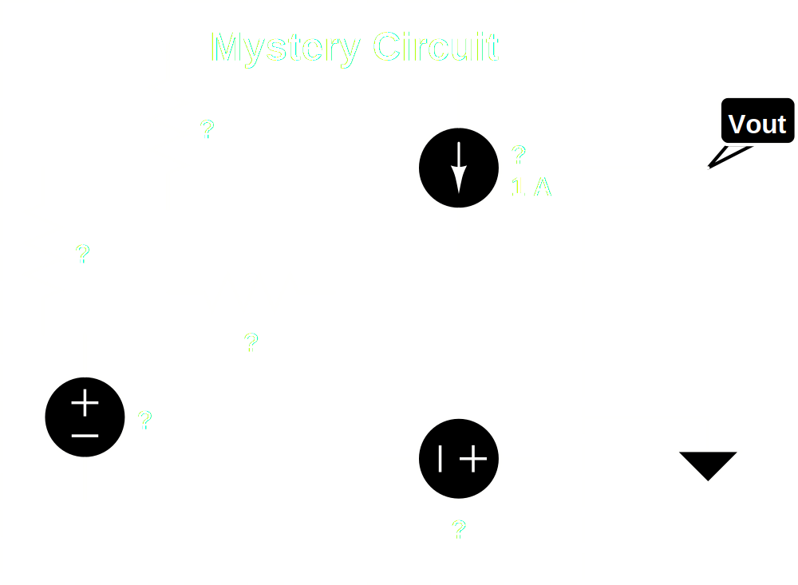

All About Impedance
Amp Nerds
Click mouse or press spacebar to advance slides.
© 2013 Chris Rossi
What is Impedance?
Impedance is the abstraction of resistance to include the effects of resistance, capacitance and inductance on AC signals.
Huh?
Ok, let's back up.
What is Resistance?
Let's say you have an object and you apply a voltage across it from one side to the other. If the amount of current that flows through the object is linearly proportional to the amount voltage applied to it, then that object is "ohmic" and is said to have resistance.
A good operational definition of resistance, then, is the ratio of voltage to current in an object with an applied voltage:
Represented schematically:

This relationship is called Ohm's law and is more commonly expressed as:
Voltage Divider
We may as well go ahead and introduce the voltage divider. This will come up a lot.

Here we can see that the applied voltage is split across the two resistors, R1 and R2.
Intuitively, we can see that if both resistors have the same resistance, then the voltage across each one must be equal, so Vout must be half of Vin.
Just as intuitively, we can see that if R1 has zero resistance then all of the voltage must appear across R2, so Vout is equal to Vin. This is functionally identical to the situation on the previous slide.
Our intuition, then, is that the voltage at Vout, which is the portion of Vin that appears across V2, must be proportional to the portion of the total resistance represented by R2. Expressed mathematically, we get the simple equation:
Ok, why do we care about impedance?
Most of the time this comes up because you need to connect one circuit to another circuit. This is called coupling.
You might be connecting the output of one piece of equipment to the input of another, or you might be connecting one part of a circuit to another part of a circuit.
Electrically, it's all the same. The electrons don't care where one box ends and another begins.
You've probably heard the terms "input impedance" and "output impedance". If you don't know what they mean, it can get confusing.
The most useful to start to understand coupling and impedance is to first simplify a little bit and narrow our discussion to just resistance. Let's take a look at input resistance and output resistance and see if we can figure out what they mean for coupling.
Input Resistance
Input resistance is relatively simple to understand. If you apply a signal voltage to the input of some circuit, a certain amount of current will flow.

We can treat the circuit on the right as a kind of black box. We don't really need to know what's in it. All we need to know is how much current flows when we apply an input voltage.
The ratio of voltage to current is the input resistance of the circuit. There doesn't have to really be a resistor, Rin, in the circuit. But we can calculate an equivalent resistor from the amount of current that flows in the circuit for a given voltage.
For purposes of coupling, we can model the entire circuit as just this single resistor and only worry about that. To be strictly correct, here, we should note that this really only holds if the circuit being driven is a linear circuit. What is and is not a linear circuit is beyond the scope of this presentation, but suffice to say that even when non-linear components are present (tubes, transistors, etc...) we tend to work with linear approximations for design purposes, so this assumption still works within the limits of our linear (aka "small signal") approximation.
The lower the input resistance, the more current will flow. The current to drive the circuit must come from the preceeding circuit. The more current required to drive a circuit, the larger a "load" it is to whatever is driving it. This can get confusing, since a circuit with a low input resistance is said to be a large load.
Output Resistance
The amount of current a circuit can actually provide to drive a particular load is determined by its output resistance.
For the author, output impedance was much harder to understand than input impedance. To really understand it, we need to turn to our friend Thévenin and his theorem.
Basically, what Thévenin says is the behavior of any arbitrary linear circuit can be modelled precisely by a very simple equivalent circuit which consists of a voltage source and a resistor:
 
Rth is known as the Thévenin equivalent resistor. Why this simplification works and how to calculate the Thévenin equivalent circuit is beyond the scope of this presentation. For linear circuits, however, any circuit can be modelled in this way with no loss of behavior. And of course, since we typically use linear approximations for modelling non-linear circuits, the equivalence holds within the limits of the linear (aka "small signal") approximation.
Output Resistance
You might be able to see now where our output resistance is.
Output resistance is nothing more than the Thévenin equivalent resistance of our circuit, as seen from the output port.
Imagine shorting the two nodes of the output port together. The full output voltage would appear across Rth, so the current would be Vth / Rth. This would be the maximum current this circuit could ever drive to another circuit.
Coupling
Let's see what happens when our simplified output circuit drives our simplified input circuit:

Do you see the voltage divider formed by the output and input resistances?
You can see that what we've labeled as Vin is the effective input voltage after the output voltage is divided by the input and output impedances:
You can see from the formula above that the bigger Rin is with respect to Rout, the closer Vin gets to Vout. In mathematical terms, we'd say the limit of Vin is Vout as Rin/Rout approaches infinity.
If we are trying to maximize the voltage transfer, then, we want to try to make Rin very large compared to Rout. This type of coupling is known as "bridging".
Although rare, it's possible that for some reason you're more concerned about maximizing current transferred, rather than voltage. In that case, you want just the opposite: a large Rout compared to Rin.
Maximum Power Transfer
Often, maximizing the voltage tranferred is exactly what we want, since we are concerned with the information represented by that voltage. For our purposes, this information is usually a sound wave.
What if, though, we want to maximize the energy transferred, rather than just the voltage? This is exactly what we're interested in when coupling an amplifier to a loud speaker!
Power, measured in watts, is a measure of energy per unit time. So if went want to know how much energy is being transferred continuously per unit time, what we want to know is the power.
Power in an electrical circuit is easy to find. It is merely the product of voltage and current:
We already know the voltage, Vin, and we know the current is just Vin divided by Rin. So the power transferred is:
Next we'll substitue for Vin and then take the maximum. The math here gets a little tedious, so I'll skip to the punch line and just tell you, that if you work out the maximum, you wind up with:
We'll actually work this out in the next slide, but you can skip it if you're not into tedious math.
So we see that for maximum power transfer we want our input and output resistances to be equal to each other. We can see that although our voltage is halved by the voltage divider formed by Rin and Rout, power transfer is at a maximum.
It seems that how we couple two circuits depends on what we're trying to do. Are we trying to maximise information or energy?
Maximum Power Transfer
And now for the tedious math part. Given that:
Substitute,
Expand the denominator,
Now, the usual way to find the maximum of a function is to take the first derivative and look for a zero crossing in the derivative function, since we know that at a maximum or a minimum the slope of our function is going to be zero.
In order to take a derivative we have to decide what our independent variable is. In this case we could choose either Rin or Rout, treating the other as a constant. However, when I worked this out using Rout as the independent variable, the result turned out to be nonsense, so we'll use Rin as the independent variable.
The maximum will be at some point satisfying:
To take the derivative of P(Rin) we'll need to use the Quotient Rule:
For
In our case:
So
Cancel denominator, move negative term to right side:
Cancel Vout and expand:
Cancel some more:
And finally: